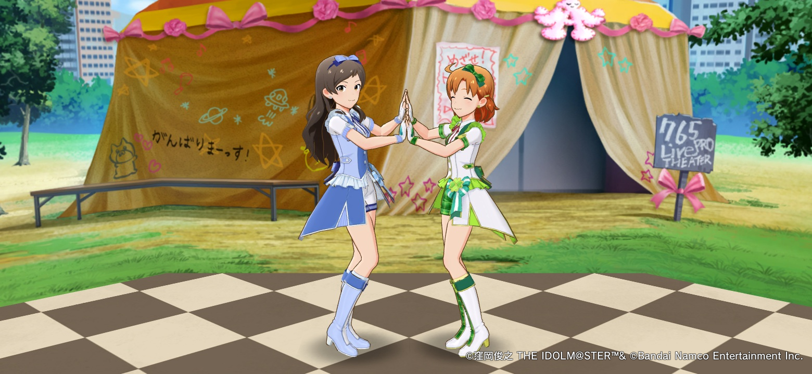

厳しいフィードバックにあなたは「アドバイスありがとう」と返せますか？ちょっぴり音痴なアイドル矢吹可奈さんに見た光
厳しいフィードバックにあなたは「アドバイスありがとう」と返せますか？ちょっぴり音痴なアイドル矢吹可奈さんに見た光
- Event:
【劇場版】アニメから得た学びを発表会2026
- Presented:
2026/04/11 nikkie（懇親会LT）
ミリオンライブ！の話の時間だああああああ
ミリオンライブ！（という秘湯）
📱＝＝＝＝＝＝＝＝＝#ミリアニ 再配信中！
— アイドルマスター ミリオンライブ！【公式】 (@imasml_765PRO) 2026年3月24日
＝＝＝＝＝＝＝＝＝💻
本日追加話数はこちら！
第1話「たったひとつの自分らしい夢」
第2話「夢のとびらはオーディション」
📺TVerhttps://t.co/VbhR2V21Wj
📺ネットもテレ東https://t.co/DIG87rttJZ
ぜひご覧ください♪ pic.twitter.com/ZYPBLiBxqP
OVA
— アイドルマスター ミリオンライブ！【公式】 (@imasml_765PRO) 2026年3月27日
アイドルマスター ミリオンライブ！
～いつか、真ん中で～
∴‥∵‥∴‥∵‥∴‥∴‥∵‥∴‥🦋
2026/3/27(金)
本日Blu-ray発売🎉
今後とも「アイドルマスター ミリオンライブ！」を
よろしくお願いいたします！#ミリオンライブ #ミリシタ #ミリアニ https://t.co/i8105pcXCh pic.twitter.com/ZtzjmRKRsO
矢吹可奈さん [1]
ちょっぴり音痴・・・でも、歌が大好き！
矢吹 可奈｜ アイドルマスター ミリオンライブ！ シアターデイズ（ミリシタ）｜ バンダイナムコエンターテインメント公式サイト
スマートフォンゲームアプリ「アイドルマスター ミリオンライブ！ シアターデイズ（ミリシタ）」公式サイト

ミリシタ時空 でのお話です
劇場版アイドルマスター 輝きの向こう側へで知っている方🙋
いまだけ忘れてください。ミリシタのメインコミュに準拠してお話しします
ちょっぴり音痴
アイドルには致命的では？
歌が大好き という気持ちで大変 努力 をしています
メインコミュ14話
矢吹可奈さん センター 公演
サポートするアイドル（5人）の1人に北沢志保さん
可奈さん（右）と志保さん（左）

練習の中で、志保さんから
矢吹さん。あなたの歌は、ほとんど音程が合ってないわ。
（承前）厳しいフィードバック
今のままじゃ、センターなんて務まらないと思う。
レッスンルームの外へ行く可奈さん
我が身に置き換えると（被害妄想 です）
nikkieさん。あなたの書くPythonは、動いているけどクソコードだわ
今のままじゃ、仕事で書くには恥ずかしいと思う
🥹🥹🥹🥹🥹
自分自身を 全否定 されたかのようなフィードバック
可奈さん「アドバイスありがとね」
全く凹んでいなかった可奈さん
あっ、志保ちゃん、さっきはありがとね！アドバイス、とっても参考になったよ！
ひかりが振り返って、俺を照らした。 😭😭😭
『桐島、部活やめるってよ』朝井リョウ
この言葉に支えられている
ときに厳しいフィードバックを受け止めるとき
参考： フィードバックはギフト （贈り物）
※とはいえ、相手にも感情があるから言い方も大事
メインコミュ第14話『だって、大好きだから！』を公開しました！
— ミリオンライブ！ シアターデイズ【公式】 (@imasml_theater) 2017年12月12日
第14話をプレイすると、矢吹可奈ちゃんが歌唱する楽曲『オリジナル声になって』をライブで選択できるようになりますよ♪#ミリシタ pic.twitter.com/VKwCnYeVrM
「オリジナル声になって」でも泣きます
志保さんを悪者にしたくない！
厳しいフィードバックをする彼女にも 相応の背景 があるんですよ！！
北沢志保さん
孤高でクールでストイック！
アイドルへの憧れ + 母親を支えたい 💰
北沢 志保｜ アイドルマスター ミリオンライブ！ シアターデイズ（ミリシタ）｜ バンダイナムコエンターテインメント公式サイト
スマートフォンゲームアプリ「アイドルマスター ミリオンライブ！ シアターデイズ（ミリシタ）」公式サイト

プレイしなよ、ミリシタ iDOL GRAND-PRIX を...
ご清聴ありがとうございました
ミリオンライブ！よろしくね（ミリアニOVA・5/5,6に13thライブ）
🔥━━━━━━━━━━━
— アイドルマスター ミリオンライブ！【公式】 (@imasml_765PRO) 2026年1月30日
#ミリオン13th
DAY1「全力援走」
追加キャストの出演が決定！
━━━━━━━━━━━━🌙
木戸衣吹さん（矢吹可奈役）の
追加出演が決定しました✨
現在アソビストアプレミアム会員最速先行を実施中✨
お見逃しなく！
🔶お申し込みhttps://t.co/ryYyLewcKe https://t.co/xduJoyqOCl pic.twitter.com/q3DPzwt5vN
お前、誰だったのよ
nikkie（にっきー）
Pythonとアニメが好き